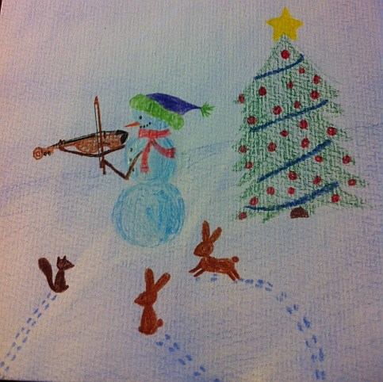

3 Детский альбом 1: Знакомство с семьей
“Детский альбом” (2002-2015)
Музыка и слова: ДГ

…
3.1 Мамин хлеб
Музыка и слова: ДГ
Мамин хлеб - он вкусный самый,
Самый, самый.
Сделаем его мы с мамой,
С мамой, с мамой
В нем есть все ингредиенты,
Вкусным станет он из которых:
Молоко, мука и дрожжи,
И, конечно, "Кон Аморэ" (Con Amore).
Когда за окном ненастно,
тучи заволокли небо,
Мы возьмём кусочек масла
И маминого хлеба
Чай из мяты и ромашки
Разольем по нашим чашкам
И чтоб ты стало ещё лучше
Запоем "Бесамэ мучо"
[ Besame Mucho ]
Пронесем через года мы,
Страны и метели
Запах хлеба нашей мамы
И те песни, что мы пели.
Мир изменится, конечно,
На Файсбуках и в Ю-тубе
Но живет у нас надежда -
Будет вечным то, что любим.
Будет вечным то, что любим...
Будет вечным то, что любим...
[ insert from family audio archives - Gorodnichy family singing Besame Mucho]
2015-20163.2 Четыре звездочки
Музыка и слова: ДГ
Луна, луна
нН небе светит.
Ярко горит она
Одна на всем белом свете.
И никого вокруг,
Но посмотри -
Рядом с ней загорелась звезда вдруг,
А потом еще три !
Припев:
Первая звездочка - для Милы
А вторая - для Роксаны
Третья звездочка - для веры
А четвертая для бебе
Эти звездочки - для Милы,
Роксаны, Веры, Ольга-Лиры
Ярко и трепетно сияют
Все они в моей судьбе.
Солнце уже взошло -
Здравствуй, новый день!
Ты подаришь людям тепло,
Каждому на планете.
Но пролетят часы,
И день пройдет
И останемся лишь я да ты,
И луна вновь зайдет.
Ночь кругом, сплошная ночь, ночь.
И кажется что ты один под луной, но
Рядом с ней всегда сияют
Эти звездочки мои.
И как далеко б я не был,
Стоит только посмотреть на небо,
Я всегда увижу там -
Эти звездочки мои.
Припев.
2004 / 20123.3 Волшебнице Вере
Музыка и слова: ДГ
дорогая моя, Верочка
не нужна тебе волшебная палочка,
чтобы делать людей счастливыми
и на жизнь игриво смотрящими
У тебя есть для этого ручечка
и волшебная в голове дырочка,
из которой идеи прекрасные
ты вынимаешь, и они - такие классные!
Е-е-е-е-е
Покажи же нам, что ты придумала,
и на этот раз ты нас не подвела,
С удивительной твоей фантазией
ты делаещь наш день еще светлей.
Словно кошечка, свернувшаяся клубком,
согреваешь ты меня своим теплом,
И как собачка с висящими ушками
Ты играешь с людьми и со зверюшками!
мяу мяу мяу, гав гав гав, му..., хрю...
Верочка моя, ты мой милый друг,
вспоминаю тебя, когда ненастно вокруг.
Если серые тучи или хмурится небо,
согреешь меня ты, где бы я не был.
хоть собачка уже та подросла,
Да и кошечка тоже уже не мала,
И на животик тебя уже не положишь,
а вот песня про тебя мне всегда поможет!
мяу мяу мяу ...
2014,20163.5 Прогулочная песня (“На свете столько интересного”)
Музыка и слова: ДГ
Роксюшечка, роксенечка
Смотри какие облачка
По небу летят
Куда-то летят
Роксюшечка, роксенечка
Смотри какие птичечки
на дереве сидят
и что-то говорят.
(А что же они говорят ?
А вот что!)
Припев:
На свете столько интересного
что стоит только оглянуться вам
как мир преображается
Погода улучшается
и вся печаль стирается
с лица!
Роксюшечка, роксенечка
Смотри какие елочки
повсюду стоят
красивые стоять
Роксюшечка, роксенечка
смотри Какие звездочки
на небе горят
для всех вокруг горят
(И что же мы видем в их волшебном свете?
А вот что!)
Припев.
2005 3.7 Здраствуй, Роксана!
Музыка и слова: ДГ
Роксана проснулась девочка моя
РоКсенья глаза открыла
РоКсюша ты посмотрела на меня
Рокси в твоих глазах - сиянье дня
в твоих глазах восторг и любовь,
и песни птиц, и солнца рассвет.
пускай останется всегда с тобой
всё, что увидел я в глаз твоих синеве.
Феб 20143.8 Это кто у нас такой ?
Музыка и слова: ДГ
Вступление:
Ты просто маленькая волшебница
ты делаешь людей счастливыми
от одного твоего взгляда у них светлеют лица
от одного твоей улыбки становится прекрасней мир
Это кто у нас такой такой такой
маленький и удивительно смешной
носик пуговкой и глазики - хлюп хлюп
щечки яблочки и Милочкой зовут
Ну а ушки до того хороши
до того смешные
все смеемся от души мы
Это кто у нас такой такой такой
маленький и удивительно смешной
пальчики на ручках словно спички
губки бантиком, бровки - червячки
Ну а глазки до того хороши
все прохожие
смеются тоже от души
Это кто у нас такой такой такой
маленький и удивительно смешной
хлопает в ладоши, машет он рукой
до того хороший человечек мой!
Ну если он еще и запоет,
то уж тут не удержаться -
веселись, ликуй народ!
2002-20043.10 Мы сейчас пойдем в кроватку {#chanson-d’aller-au-lit}
Музыка и слова: ДГ
до ре ми фа ми фа ми ре
до соль ми соль до до до до.
Мы сейчас пойдем в кроватку
чтобы спать там сладко сладко
голову положем на подушку
чтобы было мягко ушкам
и укроемся одеялом
чтобы нам теплее стало
шторкой прикроем мы окошко
чтоб темней стало немножко
(приоткроем мы окошко,
чтоб свежей стало немножко)
а потом закроем глазки
папа нам разкажет сказки
мы друг друга любим очень
скажем всем "спокойной ночи"
20103.11 Мы едем на велосипеде
Музыка и слова: ДГ
Мы едем на велосипеде
солнце светит нам
освещает нам
Путь по сторонам.
сколько же всего
интересного!
Как же хочется
поделиться
этой радостью
которой нет конца!..
мы едем на велосипеде
птицы там и тут
радостно поют
Нам с тобой поют
путь уходит вдаль
времени не жаль
Так и хочется
укатить туда
вдаль туда
туда до горизонта!..
Куплет:
И с тех пор прошло уже немало лет
мы с тобой объездили Весь белый свет
и на самолетах, и на поездах
через океаны, Через горы
через бесконечные просторы
И в каких краях бы не были бы мы
осенью, весною или посреди зимы
сердце утешала, душу окрыляла
песня, что с тобою тогда сочинили мы.
Мы едем на велосипеде
Мама ты и я
сестры и друзья
дружная семья
...
неокончена
2009-...https://drive.google.com/open?id=0B8AIVMjP8IzRLXN5NDlyaUljVUg4MElFb0V0d2ZzOWMtS2Y4
3.12 На борьбу с бобрами!
Музыка и слова: ДГ
Они идут на борьбу с бобрами,
Взяв молоток и коробку с гвоздями.
Они идут потому, что в ответе
За всё что творится на их планете.
И неважно то, что никто не узнает,
Кто каждый день деревья спасает,
А важно лишь то, и только то,
Что если не они, то не спасёт их никто.
Время не ждёт, бобры дело знают
Кождую ночь деревья сгрызают
И где вчера был лес с тенистой тропинкой
Сегодня стоят лишь пни да опилки
Люди проходят и не замечают
Или всё видят, но только счита-ают,
Что кто-то другой этим займется быть может
Но мы не из тех и мы им сами поможем!
(Но ждать ведь нельзя,И мы чем сможем поможем)
Стоит ли жара или метут метели,
Они всегда они всегда при деле
Снег ли расчистить, или листья собрать им
Всё интересно нашим сёстрам и братьям
Помогая всем работой своей
Они становятся не только сильнее
Они приобретают всюду друзей
И жить им всем легче и веселее.
Они сегодня снова в дороге,
Чтобы помочь всем тем многим,
кому тяжело или кто болеет,
Кто до завтра может не уцелеет.
Каждый день и даже каждый час
Должен быть прожит, чтоб было ясно ,
Чем помог сделать каждый из нас
Этот мир (ну хоть) чуть чуть прекрасней.
Декабрь 2012
3.13 Всё когда-то заканчивается
Музыка и слова: ДГ
Припев:
Всё когда-то заканчивается
всё имеет предел и границу
всё что с нами когда-то случиться
нами когда-то и завершиться
мы хорошо поиграли с друзьями
так что и уши и мышцы устали
(пели и танцевали часами)
но солнце село и настал вечер
время сказать им "спасибо за встречу!"
Припев.
мы хорошо отдохнули на море
пели гуляли с тобой на простое
Но день за днем закончилось лето
И мы теперь будем по нить об этом
Припев.
Какой красивой была наша елка
И стояла она у нас долго
Но все же ее мы разообрали
Но провожая, спасибо сказали
Припев.
nf
20093.14 Un bon matin
un bon matin
je me réveille
j'ai ouvre mes yeux
et voir le soleil
le ciel si bleu
et les oiseaux qui chantent
Et mes amies
viennent me chercher
Elles ont nouvelle à partager
Elles disent papa
regarde quelle belle journée
et nous allons ensemble dehors
oh comme c'est beau à l'extérieur
les fleurs les arbes et le gazon
Oh comme c'est beaux,
Oh comme c'est bon
nf
2012